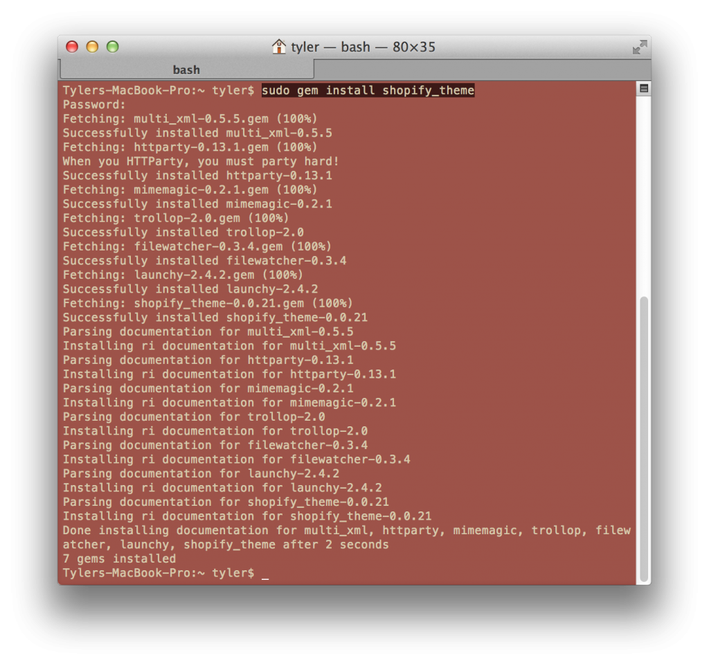
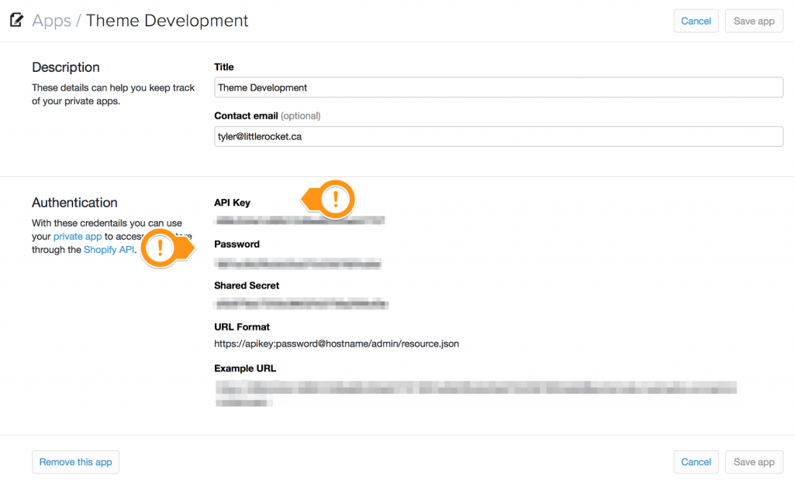
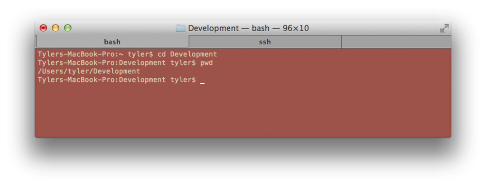
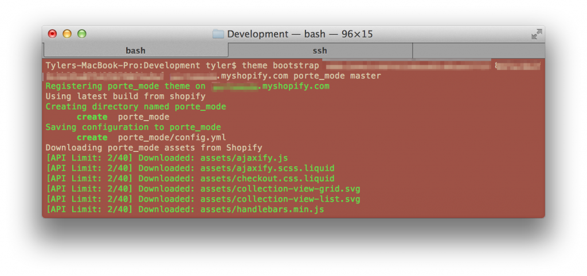
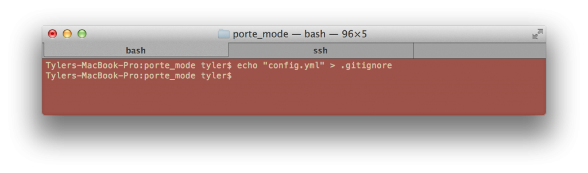
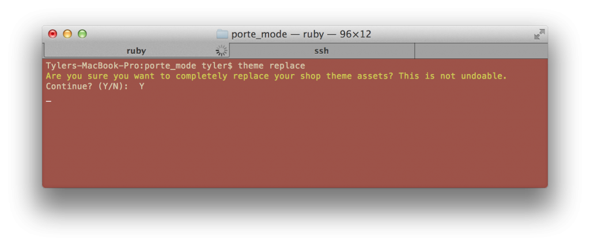

This is a simple write up to explain how a team can utilize Git versioning to manage a Shopify theme successfully. Its not a complicated processes but will require patience! As a side-note, this is simply a personal recommendation based on my experiences, there are of course other ways to go about this process.
Step One: Installing Shopify’s Theme Manager
No, not the GUI - that doesn’t work very well for what we need to do (many GUIs don’t!). What you’re going to do instead is open your Terminal.
Run gem install shopify_theme - it’s Shopify’s Ruby Gem for managing themes with advanced options.

Step Two: Creating your own shop
Citation: This is only my personal recommendation
Each developer working on the theme will need their own shop to push changes/to test changes. Because we can not run Shopify locally, we need to view it somewhere and the problem is that multiple developers can not push changes to the same shop because we will overwrite each other and create mess.
So creating your own shop will allow each developer to be independent but still work on the same codebase.
It’s time to register a private app in your development shop to let the Shopify Theme Manager communicate. Go to https://[your store].myshopify.com/admin/apps/private and generate a private application; call it anything you like… "Theme Dev", "Rickyisms", doesn’t matter. What Shopify will give you API information. Keep that API key and password on hand for step three.

Step Three: Setting up the theme files
Step Three-A: Setting up a new dev theme
If there is no theme created for your development team yet, simply open the Terminal and cd into the directory where you wish to develop.

Now that we’re in our place of development, lets pull Shopify’s Timber theme using the gem.
Run theme bootstrap api_key password shop_name theme_name master
- Replace api_key in the command with the API key you had in step two
- Replace password in the command with the API password you had in step two
- Replace shop_name in the command with the Shopify URL of your shop
- Replace theme_name in the command with what you will name the theme

In my case I called my theme porte_mode. This command will do three things…
- Create you a config.yml which Shopify Theme Manager uses to connect to your shop
- Download the latest Timber theme files
- Publish the them to your shop
Now that we have Timber ready and registered with our dev shop we can go ahead and get this baby up on Github/Bitbucket (keep the repository name the same as your theme name).
Be sure to create a .gitignore file and add config.yml to it. This ensures no developer’s Shopify Theme Manager configurations will clash when working on the repository code.

Now commit this code to the repository (ex: git add -A && git commit -m “First commit” && git push -u origin master).
That’s it. In under 5 minutes you’re ready to develop with other developers. A review of what we did…
- Chose a development location locally
- Pulled Timber theme from Shopify using theme bootstrap
- Setup our confirguation
- Created a Git Ignore file
- Pushed the first commit to GtHub/BitBucket
Note: You may need to publish the newly uploaded theme in your Shopify backend to see it.
Step Three-B: Using an already created dev theme
If a developer has made a dev theme for this project on GitHub/Bitbucket already, simply clone it (ex: git clone git@bitbucket.org:[your-username]/[theme_name].git</span>)
Next, we need to configure Shopify’s Theme Manager to use our dev shop. Open the Terminal to the repository location and run theme configure api_key password shop_name
- Replace api_key in the command with the API key you had in step two
- Replace __password __in the command with the API password you had in step two
- Replace __shop_name__in the command with the Shopify URL of your shop
After this is done, run it. Last but least, push the theme code to your dev shop. Open the Terminal and run theme replace this will push all changes and register the theme on your shop (this command will take some time).

That’s it, you’re done. In a couple minutes we’ve downloaded the dev theme from Github/Bitbucket and pushed it to our dev shop to work on.
Note: You may need to publish the newly uploaded theme in your Shopify backend to see it.
Using the Shopify Theme Manager
There are several command we can use to manage the theme of your dev shop.
Upload a theme file
theme upload assets/logo.gif
- This is for uploading a single file to your dev shop
Remove a theme file
theme remove assets/logo.gif
- This removes a single from your devshop
Completely replace shop theme assets with the local assets
theme replace
- This mass replaces everything in your dev shop with what’s in your local repository. Useful for if you
git pull/fetch/mergechanges and want to push them to your dev shop.
Watch the theme directory and upload any files as they change
theme watch
- This actively watches your local repository for changes and automatically pushes these changes to your dev shop in the background.
Final Thoughts
So that’s it! This document simply outlines how to setup a development theme on GItHub/Bitbucket and Shopify, how to pull a theme from Github/Bitbucket and develop with it as well as a list of useful commands to manage the theme as a team.
The viewable Google Doc of this is available here: https://docs.google.com/document/d/1fRCxDG7fCE4YjCVSXFZ5CsGhhpvj-PgrDPauDdjrwW8/edit?usp=sharing
Cover image credit to: Anna Samoylova